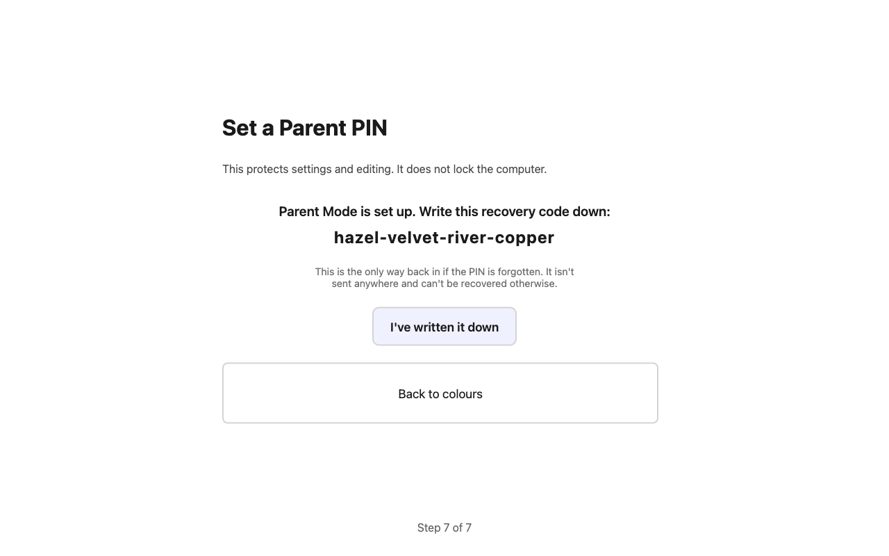
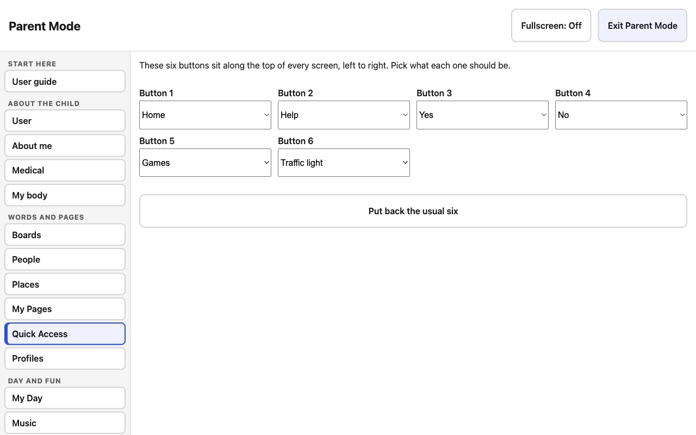

Getting started: parents and carers
Rugged Speech has big buttons with pictures and words. When your child presses them, the tablet says the words out loud. It works just the same with the wifi off.
What you need
- A Windows 10 or 11 tablet or computer, or a Mac. A touchscreen is best, but a mouse works.
- The installer: Rugged Speech Test Setup 0.0.1.exe on Windows, or the disk image for your Mac (Apple silicon or Intel).
- About 10 minutes, and a quiet moment to choose a voice with your child.
The first set-up
- Whose device is this? A name makes it "Lucy's device", shown along the top, so anyone who finds it knows whose it is.
- Choose a voice. Press Try it and pick the one your child likes best.
- Choose how big the buttons are. Fewer, bigger buttons are easier. Once it's set, try not to change it.
- Pictures and words. Drawn pictures or emoji; pictures and words, pictures only, or words only.
- What pressing does. For a child just starting, Say the word straight away is usually best.
- Colours, then a Parent PIN. Write down the four-word recovery code.

10 minutes in Parent Mode
- People and Places: add the people and places your child talks about, with a photo and your voice.
- My body: make the figure look like your child, including hair, a head covering such as a hijab, turban or kippah, a wheelchair or other equipment.
- About me and Medical: anyone can read these with one press, so only write what you're happy to share.
- Quick Access: choose the six top buttons, such as Break, Toilet, Games or Traffic light.
- Look and Seasons: pick a favourite colour, and choose which celebrations your child sees in Games.
- School: only if a school will use it. Turn on School Mode and give staff a School PIN.

A few good habits
- Wait. After you ask something, give plenty of time before asking again.
- Keep buttons where they are. Knowing where a button is, is how a child gets quick.
- Start small. A few words your child really wants (more, drink, help, stop) beat a page full.
- Ask your speech and language therapist to look at the words and settings with you.